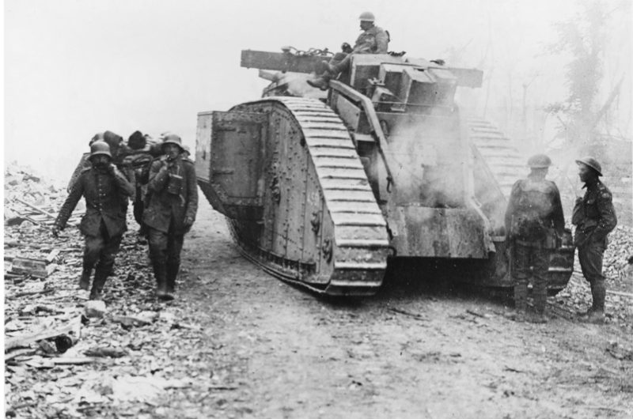
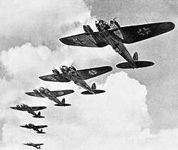
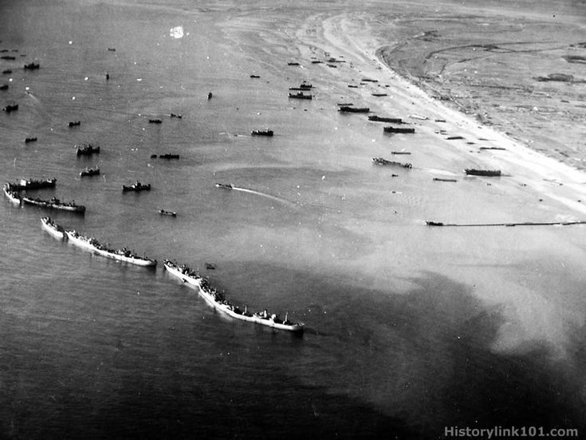
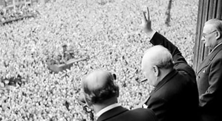

1914 - Assassination of Archduke Franz Ferdinand
In June 1914, Archduke Franz Ferdinand of Austria was assassinated in Sarajevo, a Serbian nationalist an event that would trigger the outbreak of World War I.
Chain Reaction That Led to War:
- Austrian-Hungary blamed Serbia and declared war.
- Russia supported Serbia and mobilized its army.
- Germany supported Austria-Hungary and declared war on Russia.
- Germany declared war on France.
- Germany invaded Belgium to attack France.
- Britain entered the war to defend Belgium.



End of World War I
With the help of Allies they marked the end of the first World War



End of World War II
With their effort they ended helped prevent the continuation World War II